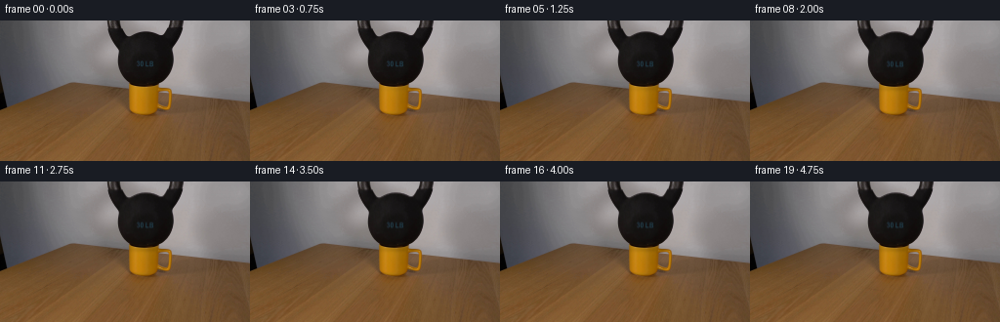
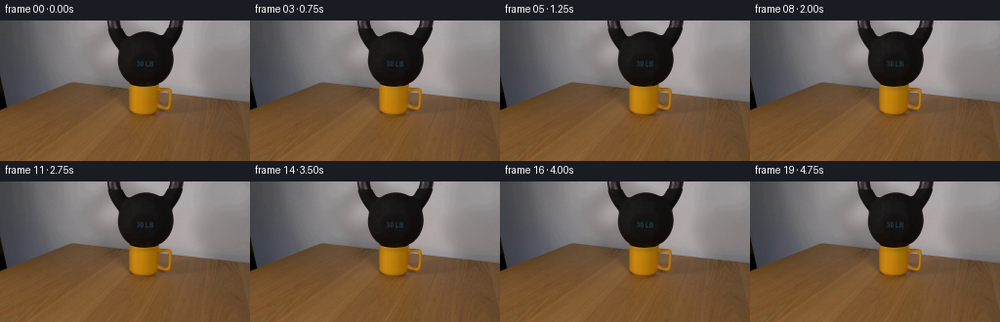
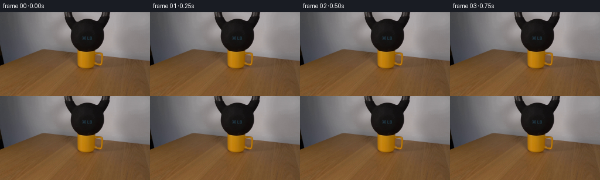

CODING AGENTS AS PIXEL WORLD MODELS
traex/DeepSeek-V4.1-Flash · 0189
点击播放 · 原生 RGB 像素
逐轮保存的候选
回放视频、检查图与代码变化。
每份候选均可单独播放。实际图片检查记录在下方工具轨迹中。
候选 01播放与检查图
点击播放 · 原生 RGB 像素

展开代码变化
--- 上一保存版本
+++ 本次保存版本
@@ -0,0 +1,112 @@
+from pathlib import Path
+
+import cv2
+import numpy as np
+from PIL import Image
+
+import artifact_io
+
+
+CASE_DIR = Path(__file__).resolve().parent
+FRAME_COUNT = 20
+HEIGHT = 144
+WIDTH = 256
+FPS = 4
+
+
+def smoothstep(value):
+ value = np.clip(value, 0.0, 1.0)
+ return value * value * (3.0 - 2.0 * value)
+
+
+def kettlebell_alpha(rgb):
+ """Build a soft matte for the dark, cropped kettlebell."""
+ hsv = cv2.cvtColor(rgb, cv2.COLOR_RGB2HSV)
+ luminance = rgb.mean(axis=2)
+ dark_neutral = ((luminance < 92.0) & (hsv[:, :, 1] < 75)).astype(np.uint8)
+
+ roi = np.zeros_like(dark_neutral)
+ roi[0:68, 100:196] = 1
+ mask = dark_neutral * roi
+ mask = cv2.morphologyEx(mask, cv2.MORPH_CLOSE, np.ones((5, 5), np.uint8))
+ mask = cv2.morphologyEx(mask, cv2.MORPH_OPEN, np.ones((3, 3), np.uint8))
+
+ contours, _ = cv2.findContours(mask, cv2.RETR_EXTERNAL, cv2.CHAIN_APPROX_SIMPLE)
+ filled = np.zeros((HEIGHT, WIDTH), np.uint8)
+ if contours:
+ largest = max(contours, key=cv2.contourArea)
+ cv2.drawContours(filled, [largest], -1, 255, thickness=cv2.FILLED)
+
+ alpha = filled.astype(np.float32) / 255.0
+ return cv2.GaussianBlur(alpha, (0, 0), 0.45)
+
+
+def settle_frame(source, alpha, progress):
+ """Apply a barely perceptible load settle while keeping the camera fixed."""
+ progress = smoothstep(progress)
+ base = source.astype(np.float32)
+
+ # A rigid bell cannot compress, so only a subpixel downward seating motion is
+ # introduced. The soft matte avoids halos at the dark edge.
+ downward = 0.38 * progress
+ transform = np.array([[1.0, 0.0, 0.0], [0.0, 1.0, downward]], np.float32)
+ shifted = cv2.warpAffine(
+ base,
+ transform,
+ (WIDTH, HEIGHT),
+ flags=cv2.INTER_LINEAR,
+ borderMode=cv2.BORDER_REPLICATE,
+ )
+ shifted_alpha = cv2.warpAffine(
+ alpha,
+ transform,
+ (WIDTH, HEIGHT),
+ flags=cv2.INTER_LINEAR,
+ borderMode=cv2.BORDER_REPLICATE,
+ )[..., None]
+ out = base * (1.0 - shifted_alpha) + shifted * shifted_alpha
+
+ yy, xx = np.mgrid[0:HEIGHT, 0:WIDTH].astype(np.float32)
+
+ # Contact occlusion increases as the load seats against the ceramic rim.
+ contact = np.exp(
+ -0.5 * (((xx - 148.5) / 13.5) ** 2 + ((yy - 68.2) / 2.25) ** 2)
+ )
+ contact *= np.exp(-0.5 * (((xx - 148.5) / 20.0) ** 4))
+ out *= 1.0 - (0.075 * progress * contact)[..., None]
+
+ # A narrow dark compression band on the front lip gives the contact weight.
+ lip = np.exp(
+ -0.5 * (((xx - 147.0) / 16.0) ** 2 + ((yy - 70.0) / 1.25) ** 2)
+ )
+ out *= 1.0 - (0.035 * progress * lip)[..., None]
+
+ # The mug transfers the load into the wood, deepening its base shadow slowly.
+ base_shadow = np.exp(
+ -0.5 * (((xx - 149.0) / 18.0) ** 2 + ((yy - 96.0) / 2.6) ** 2)
+ )
+ out *= 1.0 - (0.022 * progress * base_shadow)[..., None]
+
+ # Preserve the warm ceramic hue while adding a tiny amount of cool occlusion
+ # in the deepest contact region.
+ out[..., 2] -= 2.0 * progress * contact
+ return np.clip(np.rint(out), 0, 255).astype(np.uint8)
+
+
+def main():
+ first = np.asarray(Image.open(CASE_DIR / "first_frame.png").convert("RGB"))
+ assert first.shape == (HEIGHT, WIDTH, 3)
+
+ alpha = kettlebell_alpha(first)
+ frames = np.empty((FRAME_COUNT, HEIGHT, WIDTH, 3), dtype=np.uint8)
+ frames[0] = first
+
+ for index in range(1, FRAME_COUNT):
+ progress = min(1.0, index / 9.0)
+ frames[index] = settle_frame(first, alpha, progress)
+
+ artifact_io.save(frames, CASE_DIR)
+
+
+if __name__ == "__main__":
+ main()
候选 02播放与检查图
点击播放 · 原生 RGB 像素


展开代码变化
--- 上一保存版本
+++ 本次保存版本
@@ -46,25 +46,22 @@
progress = smoothstep(progress)
base = source.astype(np.float32)
- # A rigid bell cannot compress, so only a subpixel downward seating motion is
- # introduced. The soft matte avoids halos at the dark edge.
- downward = 0.38 * progress
- transform = np.array([[1.0, 0.0, 0.0], [0.0, 1.0, downward]], np.float32)
- shifted = cv2.warpAffine(
- base,
- transform,
- (WIDTH, HEIGHT),
- flags=cv2.INTER_LINEAR,
- borderMode=cv2.BORDER_REPLICATE,
- )
- shifted_alpha = cv2.warpAffine(
- alpha,
- transform,
- (WIDTH, HEIGHT),
- flags=cv2.INTER_LINEAR,
- borderMode=cv2.BORDER_REPLICATE,
- )[..., None]
- out = base * (1.0 - shifted_alpha) + shifted * shifted_alpha
+ # The bell is already seated. A 0.18 px deformation of its dark silhouette
+ # keeps the settle visible without turning the hard object into a ghosted
+ # translucent layer.
+ out = base.copy()
+ edge = np.clip(alpha * 1.8, 0.0, 1.0)
+ lower_half = np.clip((np.arange(HEIGHT, dtype=np.float32) - 20.0) / 42.0, 0.0, 1.0)
+ vertical_shift = 0.18 * progress * lower_half
+ transform = np.array([[1.0, 0.0, 0.0], [0.0, 1.0, 0.0]], np.float32)
+ del transform
+ for y in range(1, HEIGHT):
+ source_y = y - vertical_shift[y]
+ y0 = int(np.floor(source_y))
+ y1 = min(HEIGHT - 1, y0 + 1)
+ weight = source_y - y0
+ warped = base[y0] * (1.0 - weight) + base[y1] * weight
+ out[y] = base[y] * (1.0 - edge[y, :, None]) + warped * edge[y, :, None]
yy, xx = np.mgrid[0:HEIGHT, 0:WIDTH].astype(np.float32)
可观测工具轨迹
实际执行的命令与返回图片。
命令 1exit 0
/bin/bash -c "pwd && rg --files -g '"'!*.mp4'"' -g '"'!*.mov'"' | sort"
命令 2exit 0
/bin/bash -c "sed -n '1,240p' prompt.txt"
命令 3exit 0
/bin/bash -c "sed -n '1,280p' GENERATION_RULES.md"
命令 4exit 0
/bin/bash -c 'ls -lah && file first_frame.png && identify first_frame.png 2>/dev/null || true'
命令 5exit 0
/bin/bash -c "sed -n '1,260p' artifact_io.py"
命令 6exit 0
/bin/bash -c "sed -n '1,260p' player_template.html"
命令 7exit 0
/bin/bash -c "python - <<'PY'
from PIL import Image
import numpy as np
im=Image.open('first_frame.png')
print(im.mode, im.size)
a=np.array(im.convert('RGB'))
print('shape',a.shape,'dtype',a.dtype)
print('global mean/std/min/max',a.mean((0,1)),a.std((0,1)),a.min((0,1)),a.max((0,1)))
# coarse 16x9 grid mean RGB
h,w=a.shape[:2]
for gy in range(9):
row=[]
for gx in range(16):
p=a[gy*h//9:(gy+1)*h//9,gx*w//16:(gx+1)*w//16]
row.append(tuple(p.mean((0,1)).astype(int)))
print(gy,row)
PY"命令 8exit 0
/bin/bash -c "python - <<'PY'
from PIL import Image
import numpy as np
a=np.array(Image.open('first_frame.png').convert('RGB')).astype(float)
# 64x36 ascii luminance, gamma-ish, classify dominant color
chars=' .,:;irsXA253hMHGS#9B&@'
for y in range(0,144,4):
s=''
for x in range(0,256,4):
p=a[y:y+4,x:x+4].mean((0,1))
l=p.mean()/255
s+=chars[min(len(chars)-1,int(l*(len(chars)-1)))]
print(f'{y:03d} {s}')
print('color classification map K=black, Y=yellow, W=wood, G=gray, D=dark, X=other')
for y in range(0,144,4):
s=''
for x in range(0,256,4):
r,g,b=a[y:y+4,x:x+4].mean((0,1))
if r<45 and g<45 and b<45: c='K'
elif r>100 and g>55 and b<75 and r>g*1.35: c='Y'
elif r>70 and g>50 and r>g*1.25 and g>b*1.15: c='W'
elif abs(r-g)<20 and abs(g-b)<20: c='G'
elif r<80: c='D'
else:c='X'
s+=c
print(f'{y:03d} {s}')
PY"命令 9exit 0
/bin/bash -c "python - <<'PY'
from PIL import Image
import numpy as np
from scipy import ndimage
A=np.array(Image.open('first_frame.png').convert('RGB'))
R,G,B=A.transpose(2,0,1)
lum=A.mean(2)
# dark mask threshold
for th in [35,45,55,65,75,90]:
m=lum<th
lab,n=ndimage.label(m)
sizes=np.bincount(lab.ravel())[1:]
inds=np.argsort(sizes)[::-1][:8]+1
print('\\nth',th,'pixels',m.sum(),'components',n)
for i in inds:
ys,xs=np.where(lab==i)
print(int(sizes[i-1]),(int(xs.min()),int(ys.min()),int(xs.max()),int(ys.max())))
# yellow mask stats
m=(R>100)&(G>50)&(B<80)&(R>1.35*G)
ys,xs=np.where(m)
print('\\nyellow bbox',xs.min(),ys.min(),xs.max(),ys.max(),'n',len(xs))
for y0 in range(0,144,4):
m2=m[y0:y0+4]
if m2.any():
xx=np.where(m2)[1]
print('yellow row',y0,'xrange',xx.min(),xx.max(),'count',m2.sum())
PY"命令 10exit 0
/bin/bash -c "python - <<'PY'
from PIL import Image
im=Image.open('first_frame.png')
im.resize((1024,576),Image.Resampling.NEAREST).save('.tmp/first_x4.png')
PY"命令 11exit 0
/bin/bash -c "python - <<'PY'
from PIL import Image
import numpy as np
a=np.array(Image.open('first_frame.png').convert('RGB')).astype(float)
# inspect center crop average each 2x2; print chars by RGB category and luminance
for y in range(0,100,2):
s=''
for x in range(80,208,2):
p=a[y:y+2,x:x+2].mean((0,1)); r,g,b=p
l=p.mean()
if l<25: c='@'
elif l<50: c='#'
elif l<75: c='M'
elif l<100: c='H'
elif l<125: c='X'
elif l<150: c='h'
elif l<175: c='+'
elif l<200: c='-'
else: c='.'
# enhance hue markers
if r>g*1.35 and g>b*1.2: c=c.lower() if c not in '@#' else '*'
s+=c
print(f'{y:03d} {s}')
PY"命令 12exit 0
/bin/bash -c "python - <<'PY'
from PIL import Image
import numpy as np
A=np.array(Image.open('first_frame.png').convert('RGB'))
# print exact selected pixels and rows around contact
for y in [60,62,64,65,66,67,68,69,70,72,74,76,78,80,82,84,86,88,90,92,94,96,98,100,102,104,106,108,110]:
print('row',y)
for x in [40,60,80,100,110,120,130,140,145,150,155,160,170,180,190,200,220,240]:
print(x,tuple(A[y,x]),end='; ')
print()
PY"命令 13exit 0
/bin/bash -c "python - <<'PY' import importlib.util for m in ['cv2','imageio','imageio_ffmpeg','scipy','skimage','matplotlib','numpy','PIL']: print(m, bool(importlib.util.find_spec(m))) PY which ffmpeg || true which avconv || true"
命令 14exit 0
/bin/bash -c "python - <<'PY'
from PIL import Image
import numpy as np
A=np.array(Image.open('first_frame.png').convert('RGB')).astype(float)
# Estimate image motion: compare row/column gradients and candidate global translations
# Print vertical/horizontal derivative energy by regions
G=A.mean(2)
for name,(y0,y1,x0,x1) in {'all':(0,144,0,256),'kb':(10,65,110,188),'mug':(65,100,125,175),'table':(100,144,0,256),'bg':(0,60,0,110)}.items():
p=G[y0:y1,x0:x1]
print(name,'gradx',np.abs(np.diff(p,axis=1)).mean(),'grady',np.abs(np.diff(p,axis=0)).mean())
# frame brightness by row/col
print('row means')
for y in range(0,144,8): print(y, round(A[y:y+8].mean(),1))
print('col means')
for x in range(0,256,16): print(x, round(A[:,x:x+16].mean(),1))
PY"命令 15exit 0
/bin/bash -c "python - <<'PY'
from PIL import Image
import numpy as np
A=np.array(Image.open('first_frame.png').convert('RGB')).astype(float)
# simple kmeans sample colors
from sklearn.cluster import KMeans
pix=A[::2,::2].reshape(-1,3)
km=KMeans(n_clusters=12, random_state=0, n_init=5).fit(pix)
cent=km.cluster_centers_.astype(int)
count=np.bincount(km.labels_)
for i in np.argsort(count)[::-1]: print(count[i],tuple(cent[i]))
PY"命令 16exit 0
/bin/bash -c "python - <<'PY'
from PIL import Image
import numpy as np
A=np.array(Image.open('first_frame.png').convert('RGB')).astype(float)
# show color-change/edge per row; print strongest x-gradient in mug band
for y in range(60,102):
g=np.linalg.norm(np.diff(A[y],axis=0),axis=1)
idx=np.argsort(g)[-12:][::-1]
print(y,[(int(x),round(float(g[x]),1)) for x in idx[:8]])
PY"命令 17exit 0
/bin/bash -c "python - <<'PY'
import cv2, numpy as np
from PIL import Image
A=np.array(Image.open('first_frame.png').convert('RGB'))
hsv=cv2.cvtColor(A,cv2.COLOR_RGB2HSV)
for y in range(60,104,2):
print('\\ny=',y)
# print hue,sat,val ranges per x category every 4
for x in range(120,196,4):
h,s,v=hsv[y:y+2,x:x+4].reshape(-1,3).mean(0)
print(f'{x}:{int(h):03d}/{int(s):03d}/{int(v):03d}',end=' ')
print()
PY"命令 18exit 0
/bin/bash -c "python - <<'PY'
from PIL import Image
import numpy as np
A=np.array(Image.open('first_frame.png').convert('RGB'))
# make 4-panel crops: full, kettlebell top, contact, mug
panels=[]
for box,scale in [((0,0,256,144),3),((100,0,196,76),6),((118,56,184,104),8),((0,58,256,110),4)]:
im=Image.fromarray(A).crop(box)
im=im.resize((im.width*scale,im.height*scale),Image.Resampling.NEAREST)
im.save('.tmp/crop_%d.png'%len(panels)); panels.append(im)
print([im.size for im in panels])
PY"命令 19exit 0
/bin/bash -c "python - <<'PY'
from PIL import Image
import numpy as np
A=np.array(Image.open('first_frame.png').convert('RGB')).astype(float)
# rows/cols of dark kettlebell mask to infer circle/ellipse boundary; print x-ranges threshold lum<60 at each row
L=A.mean(2)
for y in range(0,74,2):
xs=np.where(L[y]<60)[0]
# contiguous segments >3
seg=[]
if len(xs):
cuts=np.where(np.diff(xs)>1)[0]
starts=np.r_[0,cuts+1]; ends=np.r_[cuts,len(xs)-1]
for s,e in zip(starts,ends):
if e-s>=2: seg.append((int(xs[s]),int(xs[e])))
print(f'{y:03d}',seg)
PY"命令 20exit 0
/bin/bash -c "python - <<'PY'
from PIL import Image
import numpy as np
A=np.array(Image.open('first_frame.png').convert('RGB')).astype(float)
L=A.mean(2)
# For rows, find KB extent via threshold 60; print boundary grayscale values to locate bottom contact
for y in range(58,70):
xs=np.where(L[y]<70)[0]
print('row',y,'dark extent', (xs.min(),xs.max()) if len(xs) else None)
print('vals x120-176 step2:', [(x,round(L[y,x],1)) for x in range(120,177,2)])
PY"命令 21exit 0
/bin/bash -c "python - <<'PY'
from PIL import Image
import numpy as np
A=np.array(Image.open('first_frame.png').convert('RGB')).astype(float)
# horizontal and vertical change profiles; print top transitions for columns around mug
for x in [130,131,132,133,134,135,136,137,140,150,156,160,170,171,172,173,174,175,176,177,178,180]:
d=np.linalg.norm(np.diff(A[:,x],axis=0),axis=1)
print(x,[(int(y),round(float(d[y]),1)) for y in np.argsort(d)[-8:][::-1]])
PY"命令 22exit 0
/bin/bash -c "python - <<'PY'
from PIL import Image
import numpy as np
A=np.array(Image.open('first_frame.png').convert('RGB'))
# dump RGB and HSV for row 70 every pixel from 128..176
import cv2
hsv=cv2.cvtColor(A,cv2.COLOR_RGB2HSV)
for y in [66,68,70,72,74,76,80,84,88,92]:
print('\\nROW',y)
for x in range(128,177,2):
print(f'{x}:{tuple(A[y,x])}/{tuple(hsv[y,x])}',end=' ')
print()
PY"命令 23exit 0
/bin/bash -c "python - <<'PY'
from PIL import Image
import numpy as np, cv2
A=np.array(Image.open('first_frame.png').convert('RGB'))
L=A.mean(2); S=cv2.cvtColor(A,cv2.COLOR_RGB2HSV)[:,:,1]
# candidate KB mask in region
m=(L<95)&(S<80)
m[:74,100:196]=m[:74,100:196]
m2=np.zeros_like(m,np.uint8); m2[:74,100:196]=m[:74,100:196]
# close/fill components touching seed center region
m2=cv2.morphologyEx(m2,cv2.MORPH_CLOSE,np.ones((5,5),np.uint8))
m2=cv2.morphologyEx(m2,cv2.MORPH_OPEN,np.ones((3,3),np.uint8))
n,lab,stats,cent=cv2.connectedComponentsWithStats(m2)
print('components')
for i in np.argsort(stats[1:,4])[::-1][:10]+1:
print(i,stats[i].tolist(),cent[i].tolist())
# include components with bbox in center and area > 30
keep=np.zeros_like(m2)
for i in range(1,n):
x,y,w,h,area=stats[i]
if area>20 and x>=95 and x+w<=200 and y<75: keep[lab==i]=255
print('keep area',(keep>0).sum())
# ascii at 2x2
for y in range(0,76,2):
s=''
for x in range(96,200,2):
p=keep[y:y+2,x:x+2]
s += '#' if p.mean()>150 else '+' if p.mean()>30 else ' '
print(f'{y:02d} {s}')
PY"命令 24exit 0
/bin/bash -c "python - <<'PY'
from PIL import Image
import numpy as np, cv2
A=np.array(Image.open('first_frame.png').convert('RGB'))
L=A.mean(2); S=cv2.cvtColor(A,cv2.COLOR_RGB2HSV)[:,:,1]
m=(L<95)&(S<80)
m2=np.zeros_like(m,np.uint8); m2[:74,100:196]=m[:74,100:196]
m2=cv2.morphologyEx(m2,cv2.MORPH_CLOSE,np.ones((5,5),np.uint8))
m2=cv2.morphologyEx(m2,cv2.MORPH_OPEN,np.ones((3,3),np.uint8))
n,lab,stats,cent=cv2.connectedComponentsWithStats(m2)
keep=np.zeros_like(m2)
for i in range(1,n):
x,y,w,h,area=stats[i]
if area>20 and x>=95 and x+w<=200 and y<75: keep[lab==i]=255
# determine missing lower boundary due background grey. Use visual dark threshold on region. dump mask bounds per y
for y in range(48,62):
xs=np.where(keep[y]>0)[0]
print(y,(xs.min(),xs.max()) if len(xs) else None, np.where(keep[y]>0)[0][:20].tolist())
PY"命令 25exit 0
/bin/bash -c "python - <<'PY'
from PIL import Image
import numpy as np, cv2
A=np.array(Image.open('first_frame.png').convert('RGB')).astype(float)
hsv=cv2.cvtColor(A.astype(np.uint8),cv2.COLOR_RGB2HSV)
# inspect saturation/hue distributions by region categories
for name,(y0,y1,x0,x1) in {'kb':(10,64,120,178),'rim':(64,70,130,165),'mugface':(70,95,132,174),'left':(70,95,40,130),'right':(70,95,176,220),'table':(100,144,0,256)}.items():
p=A[y0:y1,x0:x1].reshape(-1,3); h=hsv[y0:y1,x0:x1].reshape(-1,3)
print(name,'n',len(p),'mean',p.mean(0).round(1),'median',np.median(p,0),'hsv med',np.median(h,0),'hsv mean',h.mean(0).round(1))
PY"命令 26exit 0
/bin/bash -c "python - <<'PY'
from PIL import Image
import numpy as np
A=np.array(Image.open('first_frame.png').convert('RGB')).astype(float)
# list RGB at exact points in mug face grid
for y in range(68,98,2):
print('y',y,[(x,tuple(A[y,x].astype(int))) for x in [128,130,131,132,133,134,135,136,137,140,145,150,155,158,160,162,164,166,168,170,172,174,175,176]])
PY"命令 27exit 0
/bin/bash -c "python - <<'PY'
from PIL import Image
import numpy as np
A=np.array(Image.open('first_frame.png').convert('RGB')).astype(np.float32)
# optical flow between frame and smoothed/translated variants to locate KB
import cv2
# print first frame's estimated smooth background by median blur
med=cv2.medianBlur(A.astype(np.uint8),21)
Image.fromarray(med).resize((1024,576),Image.Resampling.NEAREST).save('.tmp/med.png')
# use simple local gradient orientation at KB boundary
for y in range(8,68,4):
# strongest vertical gradient x from 100:190
g=np.linalg.norm(np.diff(A[y-2:y+3],axis=1),axis=2).mean(0)
x=np.argmax(g[100:195])+100
print(y,x,round(float(g[x-100]),1))
PY"命令 28exit 0
/bin/bash -c "python - <<'PY'
from PIL import Image
import numpy as np, cv2
A=np.array(Image.open('first_frame.png').convert('RGB'))
hsv=cv2.cvtColor(A,cv2.COLOR_RGB2HSV)
# region x=115..190 y=55..105, map each pixel to categories
for y in range(54,104,2):
s=''
for x in range(112,192,2):
p=A[y:y+2,x:x+2].reshape(-1,3).mean(0)
h,sv,v=hsv[y:y+2,x:x+2].reshape(-1,3).mean(0)
if v<35: c='@'
elif sv<45 and v<95: c='#'
elif sv<45 and v<130: c='H'
elif sv<45: c='.'
elif h<10 and sv>170: c='r'
elif h<28 and sv>190: c='Y'
elif h<28 and sv>120: c='y'
elif h<30 and v>140: c='o'
else:c='x'
s+=c
print(f'{y:03d} {s}')
print('x ',''.join(str((x//10)%10) for x in range(112,192,2)))
print('x ',''.join(str(x%10) for x in range(112,192,2)))
PY"命令 29exit 0
/bin/bash -c "python - <<'PY'
from PIL import Image
im=Image.open('first_frame.png')
print(im.info)
PY"命令 30exit 0
/bin/bash -c "python - <<'PY'
from PIL import Image
import numpy as np, cv2
A=np.array(Image.open('first_frame.png').convert('RGB'))
hsv=cv2.cvtColor(A,cv2.COLOR_RGB2HSV)
# classify likely KB using hue neutral and dark, then smooth; derive contour by binary fill
L=A.mean(2); S=hsv[:,:,1]
for th in [80,90,100,110,120,130]:
m=((L<th)&(S<70)).astype(np.uint8)
# restrict upper 70, region 100:196
m[:0]=0; m[70:]=0; m[:,:100]=0; m[:,196:]=0
m=cv2.morphologyEx(m,cv2.MORPH_CLOSE,np.ones((7,7),np.uint8))
contours,_=cv2.findContours(m,cv2.RETR_EXTERNAL,cv2.CHAIN_APPROX_SIMPLE)
print('th',th,[(cv2.boundingRect(c),round(cv2.contourArea(c),1)) for c in sorted(contours,key=cv2.contourArea,reverse=True)[:5]])
PY"命令 31exit 0
/bin/bash -c "python - <<'PY'
from PIL import Image
import numpy as np, cv2
A=np.array(Image.open('first_frame.png').convert('RGB'))
hsv=cv2.cvtColor(A,cv2.COLOR_RGB2HSV)
L=A.mean(2); S=hsv[:,:,1]
m=((L<90)&(S<70)).astype(np.uint8); m[:]=0; m[:65,100:196]=(((L<90)&(S<70))[:65,100:196]).astype(np.uint8)
m=cv2.morphologyEx(m,cv2.MORPH_CLOSE,np.ones((5,5),np.uint8))
# fill contour
cs,_=cv2.findContours(m,cv2.RETR_EXTERNAL,cv2.CHAIN_APPROX_SIMPLE); c=max(cs,key=cv2.contourArea)
mask=np.zeros((144,256),np.uint8);cv2.drawContours(mask,[c],-1,255,-1)
# dump mask bounds every row and bottom
for y in range(0,70,2):
xs=np.where(mask[y]>0)[0]
print(y, (int(xs.min()),int(xs.max())) if len(xs) else None)
# overlay edge to png
out=A.copy(); out[mask>0]=out[mask>0]*.7+np.array([0,80,255])*.3
Image.fromarray(out.astype(np.uint8)).resize((1024,576),Image.Resampling.NEAREST).save('.tmp/kb_mask_overlay.png')
PY"命令 32exit 0
/bin/bash -c "python - <<'PY'
from PIL import Image
import numpy as np
A=np.array(Image.open('first_frame.png').convert('RGB')).astype(float)
# Print vertical RGB around x=150, y 55-75
for x in range(130,171,4):
print('\\nx',x)
for y in range(54,76):
print(y,tuple(A[y,x].astype(int)),end='; ')
print()
PY"命令 33exit 0
/bin/bash -c 'python generate.py'
命令 34exit 0
/bin/bash -c "python - <<'PY'
from PIL import Image
import numpy as np
from pathlib import Path
a=np.array(Image.open('first_frame.png').convert('RGB'))
f=np.array(Image.open('frames/00.png').convert('RGB'))
print('frame0 exact',np.array_equal(a,f),'maxdiff',np.abs(a.astype(int)-f.astype(int)).max())
for i in [1,5,9,15,19]:
b=np.array(Image.open(f'frames/{i:02d}.png').convert('RGB')).astype(int)
d=np.abs(a.astype(int)-b)
print(i,'changed',(d.max(2)>0).sum(),'meanabs',d.mean().round(4),'max',d.max(),'bbox',end=' ')
ys,xs=np.where(d.max(2)>0)
print((xs.min(),ys.min(),xs.max(),ys.max()) if len(xs) else None)
print('sheet',Image.open('inspection.png').size)
PY"命令 35exit 0
/bin/bash -c "python - <<'PY'
from PIL import Image
import numpy as np
A=np.array(Image.open('first_frame.png').convert('RGB')).astype(float)
F=[np.array(Image.open(f'frames/{i:02d}.png').convert('RGB')).astype(float) for i in range(20)]
for i in [0,1,2,3,5,7,9,12,19]:
d=F[i]-A
print('frame',i,'mean luma delta',d.mean().round(5),'KB delta',d[0:68,105:190].mean().round(5),'contact delta',d[64:75,125:173].mean().round(5),'mug delta',d[70:100,130:178].mean().round(5),'table delta',d[100:144].mean().round(5))
# temporal frame differences
for i in range(1,20):
d=np.abs(F[i]-F[i-1])
print('step',i,'mean',d.mean().round(5),'max',d.max(),'n>0',(d.max(2)>0).sum())
PY"命令 36exit 0
/bin/bash -c "python - <<'PY'
from PIL import Image
import numpy as np, cv2
A=np.array(Image.open('first_frame.png').convert('RGB'))
# create diff visualization for frame 9 magnified, absolute diff x20
for idx in [5,9]:
F=np.array(Image.open(f'frames/{idx:02d}.png').convert('RGB')).astype(int)
d=np.abs(F-A.astype(int))*12
d=np.clip(d,0,255).astype(np.uint8)
Image.fromarray(d).resize((1024,576),Image.Resampling.NEAREST).save(f'.tmp/diff{idx}_x12.png')
# side-by-side original and final 4x
out=Image.new('RGB',(1024,576))
out.paste(Image.open('first_frame.png').resize((512,288),Image.Resampling.NEAREST),(0,0))
out.paste(Image.open('frames/09.png').resize((512,288),Image.Resampling.NEAREST),(512,0))
out.paste(Image.open('frames/09.png').crop((112,55,192,105)).resize((512,288),Image.Resampling.NEAREST),(0,288))
out.save('.tmp/compare.png')
PY"命令 37exit 0
/bin/bash -c "python - <<'PY'
from PIL import Image
import numpy as np
# numerical anomaly checks on all frames
A=np.array(Image.open('first_frame.png').convert('RGB')).astype(int)
for i in range(20):
F=np.array(Image.open(f'frames/{i:02d}.png').convert('RGB')).astype(int)
d=F-A
# find pixels changing opposite expected (brightened significantly)
print(i,'max+',d.max(),'max-',d.min(),'bright+>3',(d.max(2)>3).sum(),'dark<-10',(d.min(2)<-10).sum())
PY"命令 38exit 0
/bin/bash -c "python - <<'PY'
from PIL import Image
import numpy as np
A=np.array(Image.open('first_frame.png').convert('RGB')).astype(int)
F=np.array(Image.open('frames/09.png').convert('RGB')).astype(int)
d=F-A
# list positive anomalies
ys,xs=np.where(d.max(2)>20)
print('n',len(xs))
for y,x in list(zip(ys,xs))[:100]: print(x,y,tuple(A[y,x]),tuple(F[y,x]),tuple(d[y,x]))
PY"命令 39exit 0
/bin/bash -c "python generate.py && python - <<'PY'
from PIL import Image
import numpy as np
A=np.array(Image.open('first_frame.png').convert('RGB')).astype(int)
for i in [0,1,2,5,9,19]:
F=np.array(Image.open(f'frames/{i:02d}.png').convert('RGB')).astype(int)
d=F-A
print(i,'changed',(d.max(2)>0).sum(),'max+',d.max(),'max-',d.min(),'meanabs',np.abs(d).mean().round(5),'bright>10',(d.max(2)>10).sum())
PY"命令 40exit 0
/bin/bash -c "python - <<'PY'
from PIL import Image
import numpy as np
A=np.array(Image.open('first_frame.png').convert('RGB')).astype(int)
F=np.array(Image.open('frames/09.png').convert('RGB')).astype(int)
d=F-A
ys,xs=np.where(d.min(2)<-5)
for y,x in zip(ys,xs): print(x,y,tuple(A[y,x]),tuple(F[y,x]),tuple(d[y,x]))
PY"命令 41exit 0
/bin/bash -c "python - <<'PY'
from PIL import Image
import numpy as np
A=np.array(Image.open('first_frame.png').convert('RGB'))
F=np.array(Image.open('frames/09.png').convert('RGB'))
# save contact crop pair
Image.fromarray(A[55:105,112:192]).resize((640,400),Image.Resampling.NEAREST).save('.tmp/orig_contact_x8.png')
Image.fromarray(F[55:105,112:192]).resize((640,400),Image.Resampling.NEAREST).save('.tmp/final_contact_x8.png')
PY"命令 42exit 0
/bin/bash -c "python - <<'PY'
from PIL import Image
import numpy as np
A=np.array(Image.open('first_frame.png').convert('RGB')).astype(int)
F=np.array(Image.open('frames/09.png').convert('RGB')).astype(int)
# strongest red reductions per row around contact
for y in range(62,74):
d=A[y,:,0]-F[y,:,0]
xs=np.where(d>5)[0]
print(y,(xs.min(),xs.max(),len(xs),d.max()) if len(xs) else None)
# count non-identical at intervals
PY"命令 43exit 0
/bin/bash -c "python - <<'PY'
from PIL import Image
import numpy as np
A=np.array(Image.open('first_frame.png').convert('RGB')).astype(float)
for y in range(60,74):
print('y',y)
print('R',[(x,int(A[y,x,0])) for x in range(120,176,2)])
PY"命令 44exit 0
/bin/bash -c "python - <<'PY'
from PIL import Image
import numpy as np
# contact crop visual with labels grid could be enough
A=np.array(Image.open('first_frame.png').convert('RGB'))
F=np.array(Image.open('frames/09.png').convert('RGB'))
for y in range(66,74):
print('y',y)
print('A', ''.join('@' if A[y,x].mean()<35 else '#' if A[y,x].mean()<70 else '+' if A[y,x].mean()<110 else '.' for x in range(128,170)))
print('F', ''.join('@' if F[y,x].mean()<35 else '#' if F[y,x].mean()<70 else '+' if F[y,x].mean()<110 else '.' for x in range(128,170)))
PY"命令 45exit 0
/bin/bash -c "python -m py_compile generate.py && python - <<'PY'
from pathlib import Path
import numpy as np
from PIL import Image
p=np.load('pixels.npz')['pixels']
print('pixels',p.shape,p.dtype,'value range',int(p.min()),int(p.max()))
print('frames',len(list(Path('frames').glob('*.png'))))
print('index.html',Path('index.html').stat().st_size)
print('inspection',Image.open('inspection.png').size)
a=np.array(Image.open('first_frame.png').convert('RGB'))
f=np.array(Image.open('frames/00.png').convert('RGB'))
print('first exact',np.array_equal(a,f))
PY"命令 46exit 0
/bin/bash -c 'git status --short 2>/dev/null || true'
保存候选 2 份；完成命令 46 次；可验证图片返回 0 张。原始 API 响应与完整日志保留在本地。